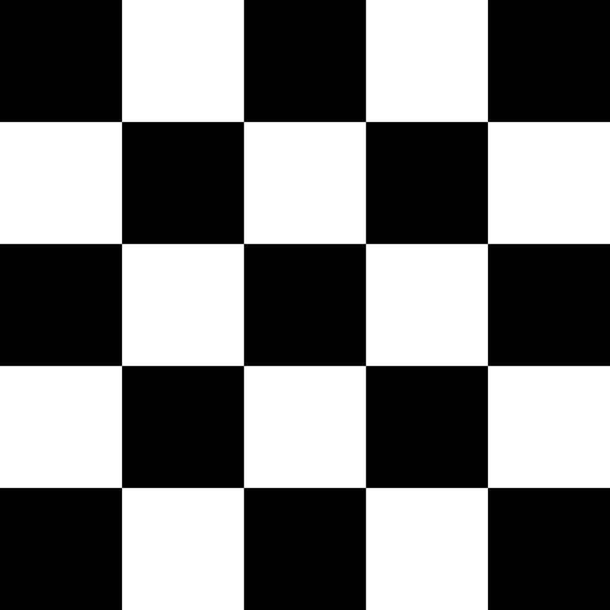
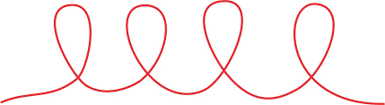
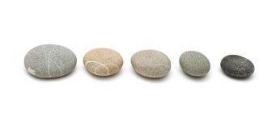
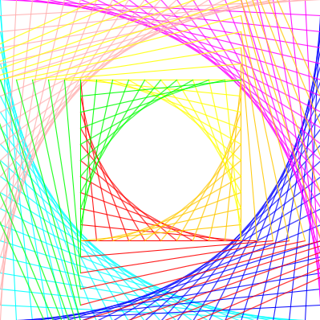
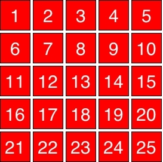
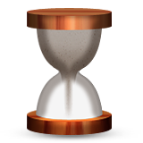

Bonus Programlar
Karel
| Resim | İsim | Zorluk Seviyesi | Başlangıç Kodu |
|---|---|---|---|
| Orta Nokta | ★★★ | Day1.zip | |
|  | Dama Tahtası | ★★☆ | BonusKarel.zip |
| Kare Boyama | ★★☆ | BonusKarel.zip |
Değişkenler
| Resim | İsim | Zorluk Seviyesi | Başlangıç Kodu |
|---|---|---|---|
| Bonus Konsol Programları | ★☆☆ | BonusConsole.zip | |
|  | Eğlenceli Döngüler | ★☆☆ | BonusConsole.zip |
| Dolu Tanesi | ★★☆ | BonusConsole.zip | |
|  | Antik Nimm Oyunu | ★★☆ | BonusConsole.zip |
Grafikler
| Resim | İsim | Zorluk Seviyesi | Başlangıç Kodu |
|---|---|---|---|
| Zıplayan Toplar | ★☆☆ | BonusGraphics.zip | |
| Yaratıcı Grafikler | ★☆☆ | BonusGraphics.zip | |
|  | Yaratıcı Çizgi Sanatı | ★☆☆ | BonusGraphics.zip |
Parametreler ve Return
| Resim | İsim | Zorluk Seviyesi | Başlangıç Kodu |
|---|---|---|---|
| Ağaç Çiz | ★☆☆ | BonusMethods.zip | |
| Daha Fazla Fonksiyon | ★☆☆ | BonusMethods.zip |
Animasyon
| Resim | İsim | Zorluk Seviyesi | Başlangıç Kodu |
|---|---|---|---|
|  | Sayı Şebekesi | ★★★ | BonusFonksiyonlar.zip |
|  | Geri Sayım | ★★☆ | BonusFonksiyonlar.zip |
| Sınırdaki Kutu | ★★☆ | BonusFonksiyonlar.zip |
Olaylar (Events)
| Resim | İsim | Zorluk Seviyesi | Başlangıç Kodu |
|---|---|---|---|
| Şekilleri Çoğaltma | ★☆☆ | BonusEvents.zip | |
| Tıklama Falan | ★★★ | BonusEvents.zip |
Listeler
| Resim | İsim | Zorluk Seviyesi | Başlangıç Kodu |
|---|---|---|---|
| Sınırdaki Yılan | ★★★ | BonusArrays.zip |